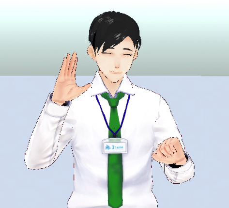
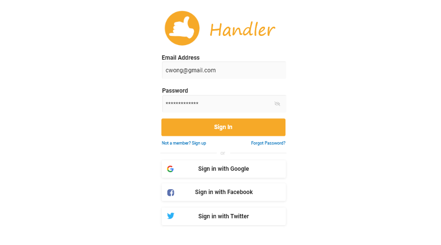
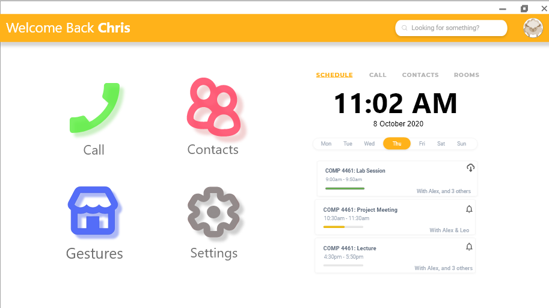
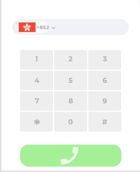

Project 1 :Designing Customized Online Communication Application and Experiences
Project Description: • Design an online communication application for a target group that need remote interaction via text, audio, video, or other channels. • Design should target a specified user scenariodrawn fromthe brainstorming (P1.0) results in class. • Group meetings need to be conducted in the Mozilla Hubssocial VR platform. The sessions need to be video recorded(e.g., via zoom cloud recording) and shared with the TAs
Details listed below:

Goals
I come from Darkness Will Arise. Our team is aimed to design Handler, which is a communication tools for deaf and hard-to-hear people so that
1. They can use online communication, especially those media is in video and audio form, without any trouble.
2. They can interact with normal people with their most familiar language (i.e. sign language).
3. They do not depend on lip-reading.
With these visions, we hope Handler can help the target audience to have better experience when using online communication tools.
learning and execution process
First, we identify the target audience of our app as the deaf and hearing-impaired people. To understand the obstacles they encounter when using online communication tools, we did research and a mini-experiment, which acts as deaf by muting all people in the lecture.
Reference Page:
| Topic | Link |
|---|---|
| Communication and culture: Signing Deaf people online in Europe | https://www.researchgate.net/publication/27827111_Communication_and_culture_Signing_Deaf_people_online_in_Europe |
| Why do some deaf people have trouble understanding written text? | https://www.quora.com/Why-do-some-deaf-people-have-trouble-understanding-written-text |
| Communication tips for online meetings | https://equality.leeds.ac.uk/support-and-resources/disability-2/deaf-awareness/support-for-deaf-and-hard-of-hearing-colleagues/communication-tips-online-meetings/ |
| Creating Streamed Instruction for the Deaf and Hard-of-Hearing Online Learne | https://www.learningdesign.psu.edu/assets/uploads/deos/deosnews11_8.pdf |

As a sender, the deaf cannot speak and thus the only method to interact with the normal people is via texting since the majority of the public does not understand sign language. Meanwhile, texting is not a really effective input method and the deaf may not be familiar with this "second" language, which makes them put much effort to communicate with others by an unfamiliar language.

After we identified the trouble the deaf faced currently, we have set certain goals (listed above in the Goals section) so that they can have a better experience on online communication just like what we are experiencing now.In order to achieve those goals, we have included the following features and some groupmates were editing the video with mmd:
| Feature | Usage | Interface |
|---|---|---|
| Sign-to-Text & Audio | 1.Automatically translate sign language to text in real-time meeting 2.Alternate input methods => deafs can interact with normal people with their most familiar language , ie. sign language. |
|
| Text & Audio-to-Sign | Automatically translate audio to sign language in real-time meeting so that the deaf does't need to rely on lip-reading | |
| Avatar | 1. Deafs can look at the sign language to get the messages instead of reading text or lip.2. The quality of the streaming video doesn't affect the deaf to understand the message. |  |
| Custom Gesture | Customize your gesture to make input process more effective and faster. |
At the same time, our group used Adobe XD to design the UI and below is our product:
| Feature | Usage | Interface |
|---|---|---|
| Login | Login our app with your personal account. |  |
| Menu | Connect other page in our app |  |
| Call | Call others by typing the number |  |
| Contact list | Save your friends' contact number |  |
| Schedule a meeting | Schedule a meetingin Handler. There is an alarm to remind you and you can download a cloud record for reviewing the meeting. |  |
| Calling Screen | Room for calling other and holding a meeting |  |
| Chat record | Users can review the chat record |  |
| Gesture | See and download other's custom gestures. |  |
| Custom Gesture | Customize your gesture and add tags to store your personal gesture. |  |
Achievement at each milestone
| Date (Month/ Day) | Achievement |
|---|---|
| 10/01 | Finish Research (See learning and execution process section) |
| 10/03 | Finish Feature Video (See learning and execution process section) |
| 10/05 | Finish UI design (See learning and execution process section) |
| 10/06 | Finish Powerpoint |
| 10/08 | Presentation |
Personal Reflection
Throughout the entire project 1, I have hand-on experience in drawing a story-board, building a prototype, and designing UI. I have learned the method and tools to help me draw a storyboard which can introduce the entire problem-and-solve process. Regarding the prototype, I have learned a variety of methods to demonstrate our products and the pros and cons of each method. Furthermore, I start to think of the reason why the UI of the app is designed in that way. ( e.g. why is the button in this color? Is it convenient to have such a function? etc.) The project can strengthen what I have thinking about the design of the UI and put it in my products. I believe it is a meaningful memory that would benefit my future career. Apart from the technique area, I have understood the obstacles the deaf and hard-to-hear people encounter in their daily life, especially nowadays many things are conducted online. The current online communication tools may not be the most suitable one for them. It may eventually enlarge the digital divide between them and the public. This project reminds me that we have not yet done our best to help the minority in our society.